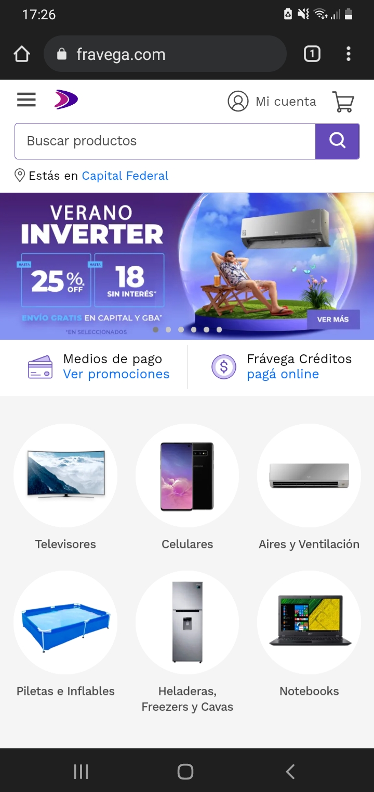
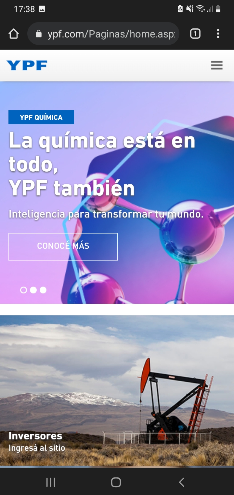

Visual Hierarchy
FRAVEGA
Even when in the mobile version of the page it is posible to have lots of information at the same time on screen, it is obvius at first glance what is the information that is intended for the public to notice first, which is the special sale that is being offered during summer season.
Hick's Law
MCDONALD'S
Hick's Law suggest that the more options you give the user, the longer it takes for the user to make a decition. McDonald's take full advantage of this concept by creating a meaningful picture and giving the user just one option, which is just 'Conoce más' (it means Learn More). By doing this they will optimize the use of the visitor's desire to know at least a little more of a potencial discount and will spend more time browsing on the website.
Rule of Thirds
YPF
https://www.ypf.com/Paginas/home.aspx
In this image, the main message is not at the center of the image. This leads the user to navigate through the whole page and pay atention to different details on the image. By doing this the, company leads the user to have the desire to learn more about the company and spend more time on its website.